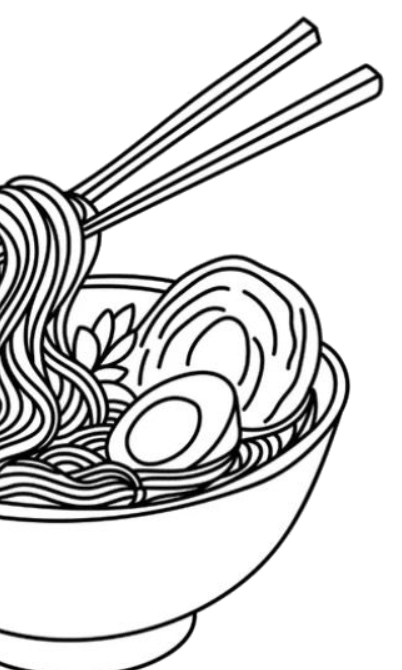
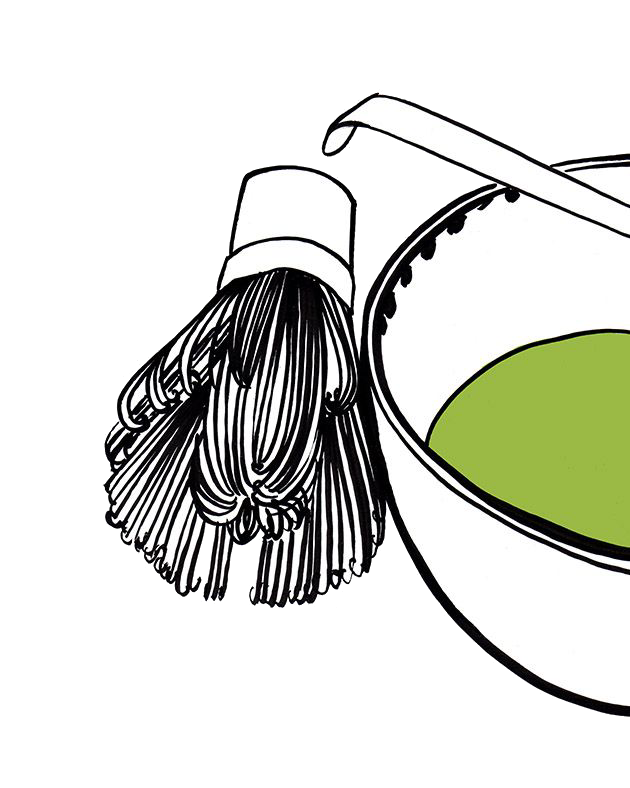
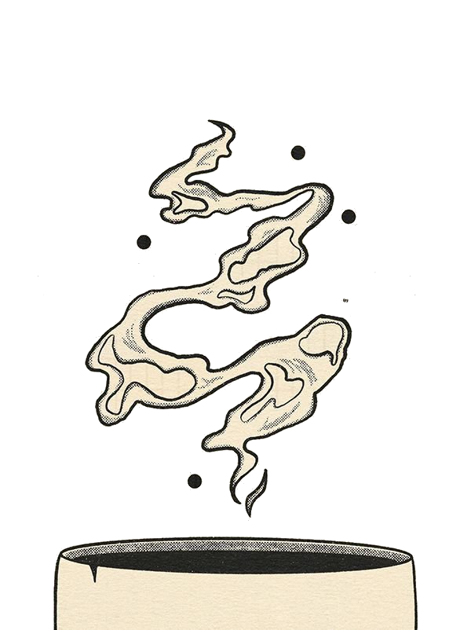

About us
Handmade with Heart

We make our ceramics by hand,
one piece at a time, so nothing ever feels mass-produced or identical.
They’re designed to be used again and again,
not thrown away
Unlike single-use plastics or disposable tableware, our ceramics are made to be used every day,
for years to come. A single mug or
bowl can replace hundreds—even
thousands—of paper or plastic cups over its lifetime. No waste, no guilt.
Just beautiful function that endures.
Reusable by Nature, Built to Last
which makes them a simple way to be a bit kinder to the planet in everyday life.
We care about keeping things
sustainable without making them complicated or
expensive.
That’s why our pieces are both eco-friendly and fairly priced
Unlike single-use plastics or disposable tableware, our ceramics are made to be used every day, for years to come. A single mug or
bowl can replace hundreds—even thousands—of paper or plastic cups over its lifetime. No waste, no guilt. Just beautiful function that endures.

Well-Priced for Real Life
Whether you're looking to brighten your morning coffee, decorate your space, or find the perfect gift, our handmade collection brings warmth, elegance, and a touch of sweetness into your life. Handmade shouldn’t mean inaccessible. We keep our prices fair by selling direct and valuing sustainability over markup. You get the beauty and durability of artisan ceramics at a price that makes sense for everyday use—because loving the earth and your budget shouldn’t be a trade-off. Handmade with passion. Designed to make you smile
